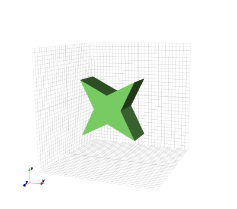

Polygon
From openEMS
Contents |
Description
A polygon is defined by its two dimensional shape in form of a polygon, its normal direction and elevation. It is created by
CSX = AddPolygon( CSX, propName, prio, normDir, elevation, points, varargin)
with the parameters
- CSX: The original CSX structure
- propName: name of the assigned property
- prio: priority of the primitive
- normDir: the normal direction of the polygon (0->x, 1->y, 2->z)
- points: two-dimensional coordinates p(i,j) of the base polygon
- elevation: elevation in normal direction
- varargin: a key/value list of primitives variable arguments
Note 1: The polygon has to be defined using Cartesian coordinates. For use with cylindrical mesh, set 'CoordSystem',0
Note 2: Each column j represents a vertex in the points matrix. The number of columns equals the number of points.
Note 3: Each row represents projection of the point on the axis in the order of right hand rule. For example: if object is normal to y axis (normDir = 1), the first and second row contain z and x coordinates respectively. The number of rows is two.
Example
A star shaped polygon located in normal direction at z = 0:
p(1,1) = -100; p(2,1) = -100; p(1,2) = 0; p(2,2) = -50; p(1,3) = 100; p(2,3) = -100; p(1,4) = 50; p(2,4) = 0; p(1,5) = 100; p(2,5) = 100; p(1,6) = 0; p(2,6) = 50; p(1,7) = -100; p(2,7) = 100; p(1,8) = -50; p(2,8) = 0; >> p p = -100 0 100 50 100 0 -100 -50 -100 -50 -100 0 100 50 100 0 CSX = AddPolygon( CSX, 'metal', 1, 2, 0, p , 'CoordSystem',0)

|
Extruded Polygon
An extruded polygon is defined by its two dimensional base shape in form of a polygon, its normal direction, elevation and thickness. It is created by
CSX = AddLinPoly( CSX, propName, prio, normDir, elevation, points, Length, varargin)
with the parameters
- CSX: The original CSX structure
- propName: name of the assigned property
- prio: priority of the primitive
- normDir: the normal direction of the polygon (0->x, 1->y, 2->z)
- points: two-dimensional coordinates of the base polygon; see above
- length: linear extrusion in normal direction, starting at elevation
- varargin: see primitives variable arguments
Note: The polygon has to be defined using Cartesian coordinates. For use with cylindrical mesh, set 'CoordSystem',0
Example
A star shaped polygon extruded in z direction:
p(1,1) = -100; p(2,1) = -100; p(1,2) = 0; p(2,2) = -50; p(1,3) = 100; p(2,3) = -100; p(1,4) = 50; p(2,4) = 0; p(1,5) = 100; p(2,5) = 100; p(1,6) = 0; p(2,6) = 50; p(1,7) = -100; p(2,7) = 100; p(1,8) = -50; p(2,8) = 0; CSX = AddLinPoly( CSX, 'metal', 1, 2, 2, p , 100, 'CoordSystem',0)
|

|
Rotational Polygon
An rotational polygon is defined by its two dimensional base shape in form of a polygon, its normal direction, rotational axis and angle of rotation. It is created by
CSX = AddRotPoly( CSX, materialname, prio, normDir, points, RotAxisDir, angle, varargin)
with the parameters
- CSX: The original CSX structure
- materialname: Name of the assigned material property : created by AddMetal() or AddMaterial()
- prio: Priority of the primitive
- normDir: The normal direction of the polygon e.g. 'x', 'y' or 'z', or numeric (0->x, 1->y, 2->z)
- RotAxisDir: Rotational axis direction e.g. 'x', 'y' or 'z', or numeric (0->x, 1->y, 2->z) . Note: Should be different to normal direction.
- points: Two-dimensional coordinates of the base polygon; see above
- angle: Rotation angle, optional, default is [0 2*pi] e.g. [0 2*pi] for a full rotation.
- varargin: see primitives variable arguments
Note: The polygon has to be defined using Cartesian coordinates. For use with cylindrical mesh, set 'CoordSystem',0
Example
The same star shaped polygon, shifted in x-direction and rotated around the x-axis.
p(1,1) = -100; p(2,1) = -100; p(1,2) = 0; p(2,2) = -50; p(1,3) = 100; p(2,3) = -100; p(1,4) = 50; p(2,4) = 0; p(1,5) = 100; p(2,5) = 100; p(1,6) = 0; p(2,6) = 50; p(1,7) = -100; p(2,7) = 100; p(1,8) = -50; p(2,8) = 0; p(1,:)=p(1,:)+200; % shift in x-direction by 200 CSX = AddRotPoly( CSX, 'metal', 1, 2, p, 1, [0 pi], 'CoordSystem',0)
A conical solid can be created by rotating a triangular polygon:
p(1,1) = 0; p(2,1) = -100; p(1,2) = 100; p(2,2) = -100; p(1,3) = 0; p(2,3) = 100; CSX = AddRotPoly( CSX, 'metal', 1, 2,p, [1 0 0], [0,2*pi])

|

{kind=link}
{kind=link}